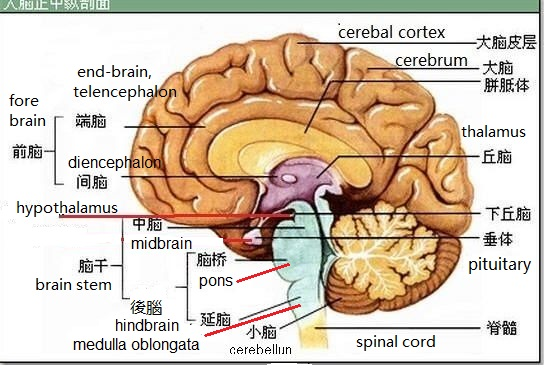

Complementary and Alternative Healing University

中藥詞典 Chinese Herb Dictionary
|
Complementary and Alternative Healing University
|
The effect of four kinds of traditional Chinese herbal compound on the experimental acute stress behaviors and the hypothalamus-pituitary-adrenal gland axis].Tong Y1, Zou J, Ni LQ, Liang SH, Cao BY, Chen HJ. Author information
AbstractOBJECTIVE:To study the effects of four kinds of traditional Chinese herbal compound, Sini powder, Banxiahoupu soup, Ganmaidazao soup and Guizhigancaolonggumuli soup, on the experimental acute stress behaviors and the hypothalamus-pituitary-adrenal gland axis. METHOD:Rats were divide into 7 groups:
The behaviors of the rats and their CRH of the hypothalamus, ACTH of plasma and CORT of serum (by the means of radio-immunity) were detected.
RESULT:
Sini powder could reduce the crossing times of open-field test( P < 0.01) and the contents of CRH and CORT (P < 0.01, P < 0.05);
Banxiahoupu soup could extent the still time of tail-hanging test ( P < 0.05) and the content of CRH (P < 0.05);
Explanation by Joe Hing Kwok Chu Cortisol (CORT) becomes high during stress condition. Cortisol is triggered by ACTH (adrenacorticotropic hormone) secreted by the pituitary gland, which in turn is trigger by CRH (corticotropic releasing hormone) secreted by the hypothalamus. The above path (connection) is called:
 source of picture:陈 阅增 普通生物学，高教出版社，98年 ，P．238 Problems with website? Please Click here for comment. (Not for inquiry ) 按此看關於版權問題
|